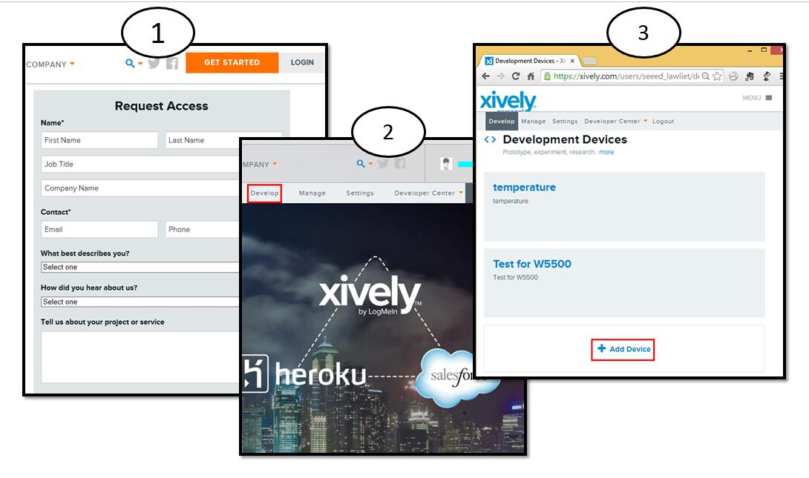

The W5500 Ethernet Shield v1.0 can be used to provide your projects with internet connectivity.W5500 enables users to have the Internet connectivity in their applications just by using the single chip in which TCP/IP stack, 10/100 Ethernet MAC and PHY embedded. The shield also have two Grove connectors and a microSD card socket to support projects which require storing large amounts of data from Grove sensor. The RJ45 port (Where the Ethernet cable is connected to) is low enough to allow you to stack more shields on top of this one if needed.
Hardware Configuration
①：RJ45： Ethernet Port;
②：IC W5500： a hardwired TCP/IP Ethernet Controller;
③：Reset Button： Reset Ethernet shield ;
④：SD Card Socket： support Micro SD card in FAT16 or FAT32; maximum storage is 2GB.
⑤：I2C Interface
⑥：UART Interface
Pins usage on Arduino
D4： SD card chip select
D10： W5200 Chip Select
D11： SPI MOSI
D12： SPI MISO
D13： SPI SCK
Notice：
Both W5500 and SD card communicate with Arduino via SPI bus. Pin 10 and pin 4 are chip select pins for W5500 and SD slot. They cannot be used as general I/O.
We will show a example.This example can upload your sensor data to Xively and store it up to SD Card.
Part List : Seeeduino, W5500 Ethernet Shield, Grove - Temperature, Micro SD Card
1. Mount W5500 Ethernet Shield v1.0 to your Arduino and connect Grove - Temperature to I2C Grove port.
2. Connect the shield to network with a standard Ethernet cable;
3. Connect Arduino to PC via USB cable;

1. If you haven't an account,you should Register an account in xively and login.
2. Now,we can click Develop to add a device.

3. Download the library：W5500 Ethernet Shield v1.0 Library.
4. Unzip and put it in the libraries file of Arduino IDE by the path: ..\arduino-1.0.1\libraries.
5. Restart the Arduino IDE.
6. Open the example "Ethernet_Temp_SD" via the path: File --> Examples --> Ethernet --> Ethernet_Temp_SD. you need to modify some parameters.

7. Upload the program to Arduino. If you do not know how to upload code, please click [here].
Now,we will show result.
1. Put your SD card into the computer,you will see some temperature information.
2. Open Serial Monitor,you will see some temperature information.
3. What's more, we can see information from web.

Is it very easy ? you can begin your project.
W5500 Ethernet Shield eagle files
W5500 Ethernet Shield Datasheet.pdf
W5500 Ethernet Shield Schemtic.pdf
Copyright (c) 2008-2016 Seeed Development Limited (www.seeedstudio.com / www.seeed.cc)